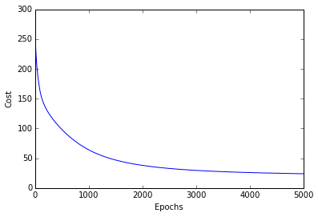
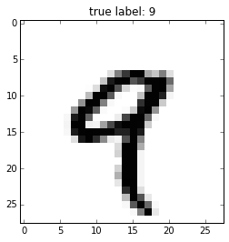
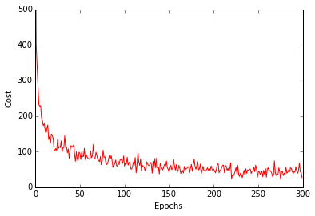

mlxtend Sebastian Raschka, last updated: 06/24/2015
Neural Network - Multilayer Perceptron
from mlxtend.classifier import NeuralNetMLP
Implementation of a feedforward artificial neural network (multilayer perceptron, MLP). Although the code is fully working and can be used for common classification tasks, this implementation is not geared towards efficiency but clarity -- the original code was written for demonstration purposes.

A fact sheet of the current implementation:
- Binary and multi-class classification
- 1 input layer, 1 hidden layer, 1 output layer
- logistic (sigmoid) activation functions (see the activation function cheatsheet)
- learning via batch gradient descent or mini-batch gradient descent using the backpropagation algorithm
- optional L1 and/or L2 regularization (penalty)
- Currently only constant learning rate
For more details, please see the source code.
Example 1 - Classify Iris
Load 2 features from Iris (petal length and petal width) for visualization purposes.
from mlxtend.data import iris_data
X, y = iris_data()
X = X[:, 2:]
Train neural network for 3 output flower classes ('Setosa', 'Versicolor', 'Virginica'), regular gradient decent (minibatches=1), 30 hidden units, and no regularization.
>>> from mlxtend.classifier import NeuralNetMLP
>>> import numpy as np
>>> nn1 = NeuralNetMLP(n_output=3,
... n_features=X.shape[1],
... n_hidden=30,
... l2=0.0,
... l1=0.0,
... epochs=5000,
... eta=0.001,
... minibatches=1,
... shuffle=True,
... random_state=1)
>>> nn1.fit(X, y)
>>> y_pred = nn1.predict(X)
>>> acc = np.sum(y == y_pred, axis=0) / X.shape[0]
>>> print('Accuracy: %.2f%%' % (acc * 100))
Accuracy: 96.00%
Now, check if the gradient descent converged after 5000 epochs, and choose smaller learning rate (eta) otherwise.
>>> import matplotlib.pyplot as plt
>>> plt.plot(range(len(nn1.cost_)), nn1.cost_)
>>> plt.ylim([0, 300])
>>> plt.ylabel('Cost')
>>> plt.xlabel('Epochs')
>>> plt.show()

Note: In practice, it is recommended to standardize the features for faster and smoother convergence.
>>> X_std = np.copy(X)
>>> for i in range(2):
>>> X_std[:,i] = (X[:,i] - X[:,i].mean()) / X[:,i].std()
Visualize the decision regions:
>>> from mlxtend.evaluate import plot_decision_regions
>>> plot_decision_regions(X, y, clf=nn1)
>>> plt.xlabel('petal length [cm]')
>>> plt.ylabel('petal width [cm]')
>>> plt.show()

Example 2 - Classify handwritten digits from MNIST
Load a 5000-sample subset of the MNIST dataset (please see this tutorial if you want to download and read in the complete MNIST dataset).
>>> from mlxtend.data import mnist_data
>>> X, y = mnist_data()
Visualize a sample from the MNIST dataset to check if it was loaded correctly.
>>> def plot_digit(X, y, idx):
... img = X[idx].reshape(28,28)
... plt.imshow(img, cmap='Greys', interpolation='nearest')
... plt.title('true label: %d' % y[idx])
... plt.show()
>>> plot_digit(X, y, 4)

Initialize the neural network to recognize the 10 different digits (0-10) using 300 epochs and mini-batch learning.
>>> nn = NeuralNetMLP(n_output=10, n_features=X.shape[1],
... n_hidden=100,
... l2=0.0,
... l1=0.0,
... epochs=300,
... eta=0.0005,
... minibatches=50,
... random_state=1)
Learn the features while printing the progress to get an idea about how long it may take.
>>> nn.fit(X, y, print_progress=True)
Epoch: 300/300
>>> y_pred = nn.predict(X)
>>> print('Accuracy: %.2f%%' % (acc * 100))
... Accuracy: 94.86%
Check for convergence.
>>> plt.plot(range(len(nn.cost_)), nn.cost_)
>>> plt.ylim([0, 500])
>>> plt.ylabel('Cost')
>>> plt.xlabel('Mini-batches * Epochs')
>>> plt.show()

>>> plt.plot(range(len(nn.cost_)//50), nn.cost_[::50], color='red')
>>> plt.ylim([0, 500])
>>> plt.ylabel('Cost')
>>> plt.xlabel('Epochs')
>>> plt.show()

Default Parameters
class NeuralNetMLP(object):
""" Feedforward neural network / Multi-layer perceptron classifier.
Parameters
------------
n_output : int
Number of output units, should be equal to the
number of unique class labels.
n_features : int
Number of features (dimensions) in the target dataset.
Should be equal to the number of columns in the X array.
n_hidden : int (default: 30)
Number of hidden units.
l1 : float (default: 0.0)
Lambda value for L1-regularization.
No regularization if l1=0.0 (default)
l2 : float (default: 0.0)
Lambda value for L2-regularization.
No regularization if l2=0.0 (default)
epochs : int (default: 500)
Number of passes over the training set.
eta : float (default: 0.01)
Learning rate.
shuffle : bool (default: False)
Shuffles training data every epoch if True to prevent circles.
minibatches : int (default: 1)
Divides training data into k minibatches for efficiency.
Normal gradient descent learning if k=1 (default).
random_state : int (default: None)
Set random state for shuffling and initializing the weights.
Attributes
-----------
cost_ : list
Sum of squared errors after each epoch.
"""
Methods
def fit(self, X, y, print_progress=False):
""" Learn weights from training data.
Parameters
-----------
X : array, shape = [n_samples, n_features]
Input layer with original features.
y : array, shape = [n_samples]
Target class labels.
print_progress : bool (default: False)
Prints progress as the number of epochs
to stderr.
Returns:
----------
self
"""
def predict(self, X):
"""Predict class labels
Parameters
-----------
X : array, shape = [n_samples, n_features]
Input layer with original features.
Returns:
----------
y_pred : array, shape = [n_samples]
Predicted class labels.
"""